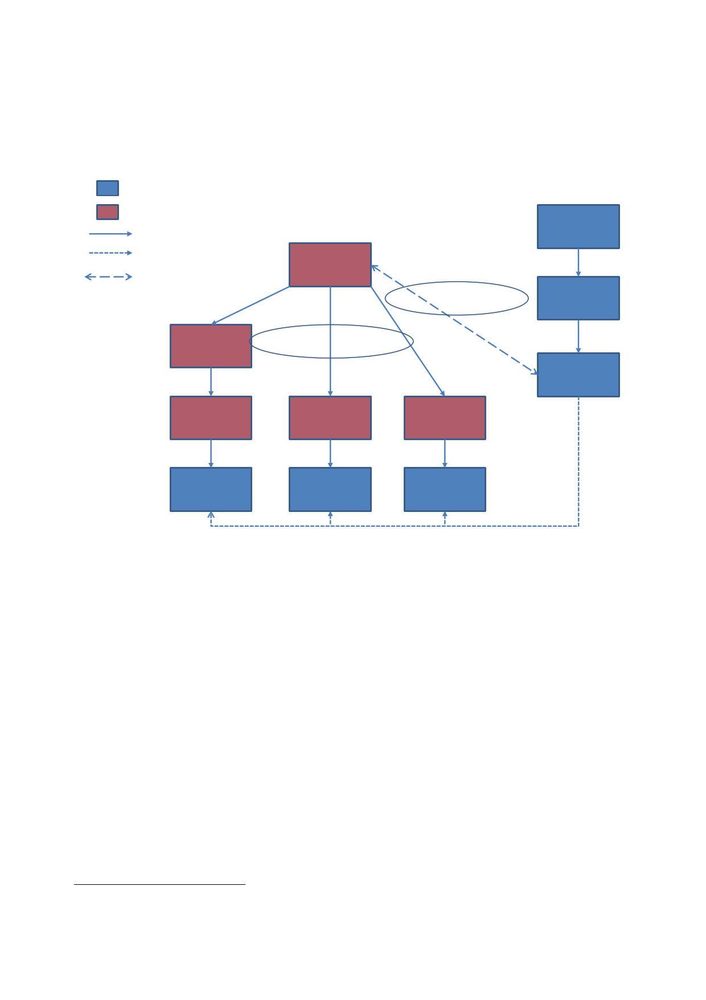

8 | The
invasion
28.
Rear Admiral
David Snelson, the UK Naval Contingent Commander,
reported
directly to
Rear Admiral Barry Costello, Coalition Maritime Component
Commander.
KEY
UK
US
Tactical
C ommand
National
C ommand
Two-‐way
l iaison
General
Franks
Liaison
Lieutenant
General
McKiernan
Tactical
Command
Lieutenant
General
Conway
Lieutenant
General
Moseley
Rear
Admiral
Costello
Admiral
Boyce
Lieutenant
General
Reith
Air
Marshal
Burridge
Major
General
Brims
Air
Vice Marshal
Torpy
Rear
Admiral
Snelson
29.
A description
of the structures through which strategic direction of the
campaign
was conducted
can be found in Section 2.
30.
At the
start of operations, the US campaign plan had four phases
and
envisaged
that it would take up to 125 days to destroy Iraqi forces and
remove
Saddam
Hussein’s regime.
31.
The plan
was based on an assumption that the scale and speed of
the
invasion
would undermine the will of the Iraqi armed forces to fight, and
could
lead to the
collapse of the regime or its removal.
32.
The US plan
for the invasion of Iraq, Operation Iraqi Freedom (OPLAN 1003
V),
is described
in Gen Franks’ memoir American
Soldier.23
Gen Franks
wrote:
“It was a
complex plan. Our ground offensive would proceed along two
main
avenues of
advance from the south, each route having several axes. Army
forces,
23
Franks T
& McConnell M. American
Soldier,
HarperCollins, 2004.
9